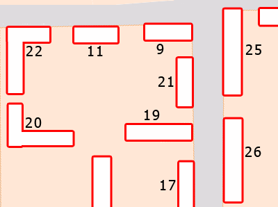

| Биллинговая система NoDeny. Топология |
- Адреса всех точек подключения, их параметры: где взято питание, какие ключи и т.д.
- Какие свичи установлены в каких точках. Ведется автоматический контроль свободных портов на точке с учетом количества свичей на ней и количества подключенных абонентов.
- Состояние каждой единицы оборудования (в ремонте/на проверке/на складе), поставщик оборудования и срок гарантии
- Сети, практикующие два 100-мбитных подключения на одну 8-жильную витую пару, получают возможность контроля какие линки задействованы на двух абонетов, а какие на одного. Благодаря этому, перед выходом на объект подключения можно решить на какую пару подсоединить нового абонента либо же протягивать новый линк
- Формировать бланк для монтажников со списком клиентов (и их данными) на точке подключения
- Установленное клиенту оборудование, например номер сетевой карты
- Сформировать в графическом виде карту с нанесенными на нее точками подключения, магистралями. Автоматически формировать на карте точки с авторизованными клиентами, точки которые работоспособны т.к за ними есть точки с авторизованными клиентами, обновлять карту с определенным интервалом времени. Устанавливать/перемещать точки можно интерактивно кликом мыши в определенную точку на карте.
Каждый зарегистрированный клиент (сервер и иное оборудование сети) имеет свою физическую точку подключения. Точки нумеруются. В каждой физической точке подключения может находится от одного и более свича. Точки связаны между собой магистральными линиями. Каждая магистральная линия занимает 1 порт в свиче - этот порт обозначается как uplink в списке точек подключения. Если в точке находится 2 свича, то считается что они связаны между собой, т.е. под uplink отводится еще 2 порта (по одному на каждый свич) и т.д. для 3-го, 4-го... свичей.
Каждый свич описывается в разделе "топология" -> "свичи" и имеет такие параметры как общее количество портов, количество нерабочих портов (например, поврежденных в результате гроз), а также номер точки подключения в которой он находится. Нулевая точка означает, что свич находится на складе.
Если взять за правило указывать каждому клиенту точку его подключения, то всегда будет точная информация о том в какой точке сколько свободных портов, т.е. определить возможно ли подключить нового клиента без дополнительного свича либо же необходимо установить новый, либо заменить на свич с большим количеством портов.
Не всегда сеть организована аккуратно, т.е. бывают неточности в виде неподписанных кабелей или отсутствия информации какой клиент к какой точке подключен. Все неизвестные подключения необходимо указать в пункте "неучтенные порты" в конкретной точке подключения. Клиент считается подключенным к свичу если его состояние не равно "отключен физически". Поэтому если клиент удаленный, но его состояние не равно вышеуказанному, то считается, что клиент занимает порт
При просмотре списка точек подключения, если свободных портов не осталось - это выделяется, если количество портов отрицательно - они выделяются красным цветом. Такое может произойти из-за неверных данных, например если количество подключенных клиентов больше чем рабочих портов минус аплинки, либо нет данных какой свич стоит - не известно общее количество портов. Неучтенные" порты также выделяются красным цветом.
Работа с разделом топологии
Прежде всего необходимо начать с занесения в базу данных nodeny списка улиц находящихся в вашем районе подключения. Это необходимо т.к в данных каждого клиента есть поле "улица", значение которого выбирается из этого списка. Если вы не внесете улицы, то у клиентов поле "улица" будет установлено в значение "не указана", тогда название улицы можете ввести в комментариях к адресу
Возьмите карту сети (в любом виде) и определитесь (вероятно, вами это уже сделано давно) с сегментацией сети. Пронумеруйте точки где у вас стоит оборудование. Нумерацию начинайте с любого числа, кроме нуля. Если карт несколько, рекомендуется на первой карте начинать нумерацию с 1, на 2й - со 100, на 3й - с 200 и т.д. Нумерация не обязательно должна быть неразрывной. В дальнейшем же будут вноситься новые точки.
Начните заносить точки в базу nodeny: "топология" -> "точки" -> "новая точка". Ни одно поле, кроме номера точки, не обязательно к заполнению. Тем не менее рекомендуется указать как минимум улицу и дом. Поле "соеденения с" предназначено для того чтобы модуль графической прорисовки карт смог нарисовать магистральные соединения между точками подключения. Укажите через запятую точки с которой непосредственно соеденена данная. Например: 2,15,38. Обратите внимание, что в точках 2,15 и 38 также должны быть указаны соединения с текущей точкой. Контроль за обоюдными соединениями осуществляется в разделе "операции" -> "проверка", если какая-то точка будет соеденена с другой, а обратного соединения не будет - это будет сообщено
Поле "подсеть" заполните начальным адресом подсети для данного местарасположения. На основе этого адреса, при внесении данных нового клиента, автоматически будет предложен незанятый ip в этой подсети. Предполагается, что на одной точке подключения не может быть больше 256 подключений, т.е если вы укажете подсеть '10.1.2.0', то клиентам будут последовательно предлагаться адреса от '10.1.2.0' до '10.1.2.255'. Рекомендуется назначать адреса не с нуля, а, например с 5, резервируя несколько первых адресов для управляемого оборудования. Например, указать '10.1.2.5'. Если на точке больше 256 подключений, то вам прийдется отказаться от автоматической выдачи адресов и устанавливать их вручную
При получении партии свичей, назначте им номера (просто сквозной нумерацией) и занесите данные в базу свичей: номер - данные свича. При установке на точку подключения, найдите в базе свич по номеру и в его данных укажите номер точки. При снятии свича с точки, в данных укажите точку равной нулю, либо другому числу в зависимости от состояния свича (необходима проверка/ремонт/не подлежит ремонту). В комментариях к этому полю указано какое состояние соответствует какому числу
В разделе "топология" -> "оборудование" ведется учет у какого клиента стоит какое оборудование. апример, сетевая карта. На одного клиента можно назначить несколько единиц оборудования одного или разных типов.
Чтобы получить максимальный эффект от использования раздела "топология" рекомендуем заносить в биллинг все сервера сети, а также любое сетевое оборудование имеющее ip-адрес. Назначайте им сетевые и др. типы оборудования таким же образом как и обычным клиентам. Клиентам, имеющим несколько ip-адресов, назначайте оборудование не только на основной ip, но и на алиасные.
Карты
Для графического формирования карт необходим модуль p5-Imager:
cd /usr/ports/graphics/p5-Imager && make install clean
В графическом редакторе необходимо сформировать подложку карты сети: контуры домов, номера домов и, возможно, улицы. Совет: возьмите карту района (отсканированную либо онлайновую), запустите photoshop и на новом слое поверх домов рисуйте прямоугольники любым цветом. В конце работы откройте свойства слоя и примените к нему стиль stroke, в результате контуры домов будут красиво очерчены по краям:

Удалите ненужные слои, поставьте номера домов рядом (лучше рядом чтобы нарисованные сверху точки подключений их не закрывали)
Сохраните картинку в формате psd (на случай будущих изменений) и в формате gif или png. В этом формате загрузите карту на сервер (по ftp или sftp) в любую папку вебсервера, например /usr/local/www/apache2/data/maps/.
В настройках nodeny укажите параметры карты. Переходите в раздел "топология" -> "карты", выбирайте карту.